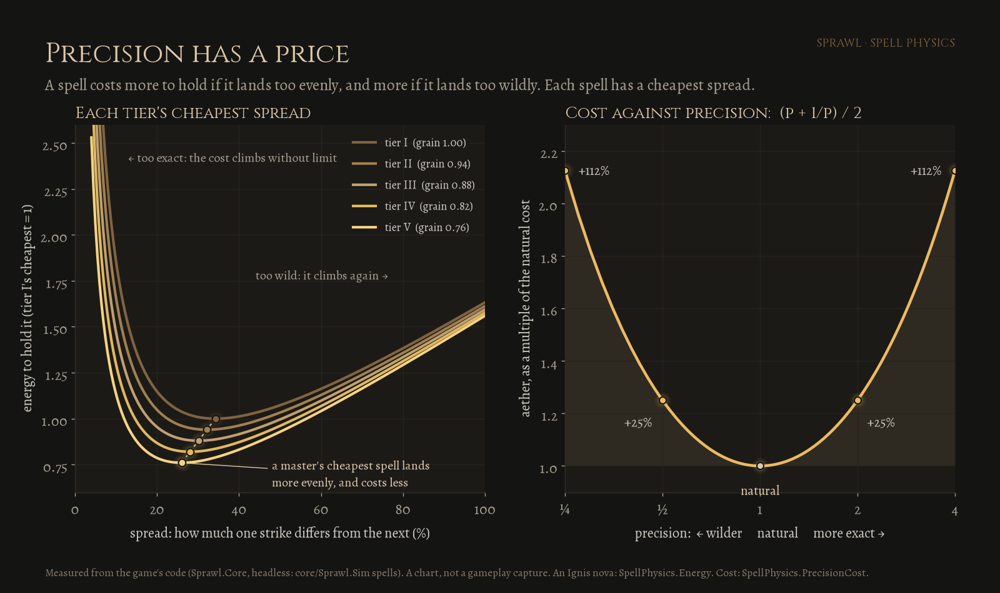
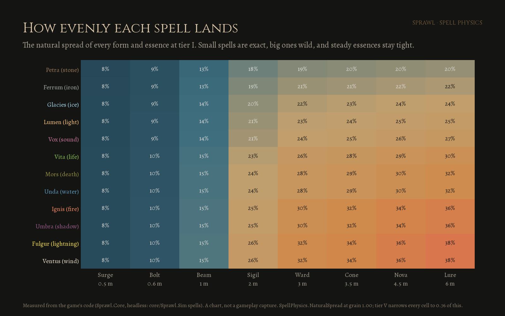
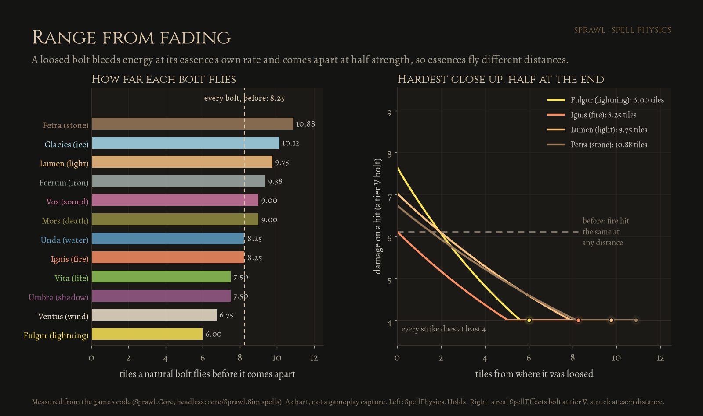
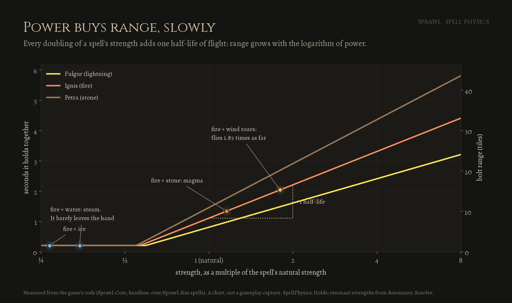
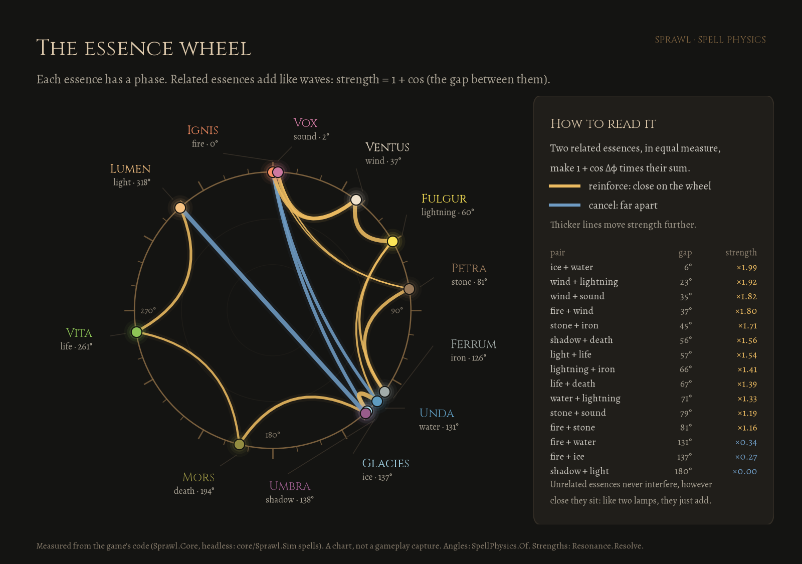
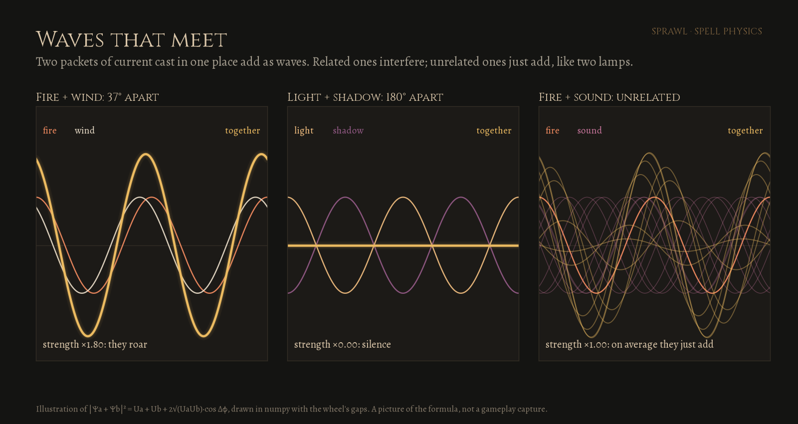
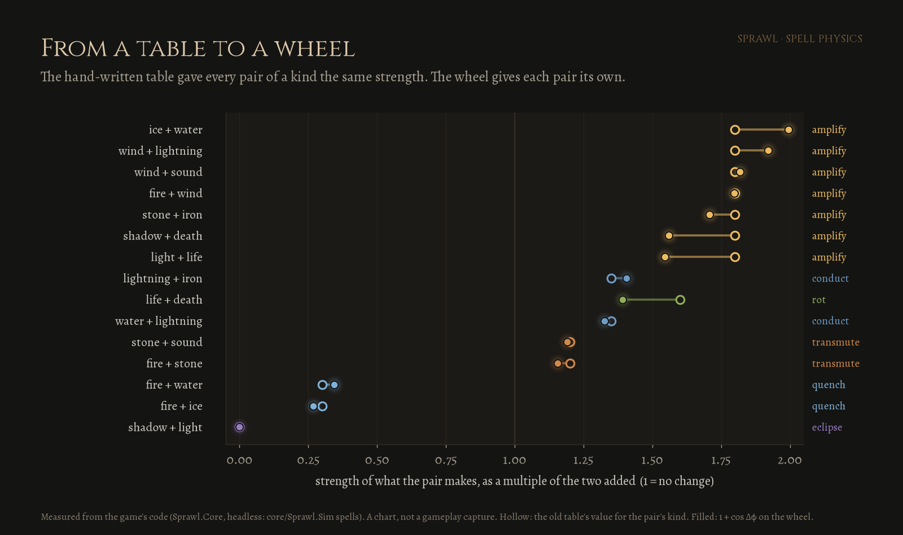
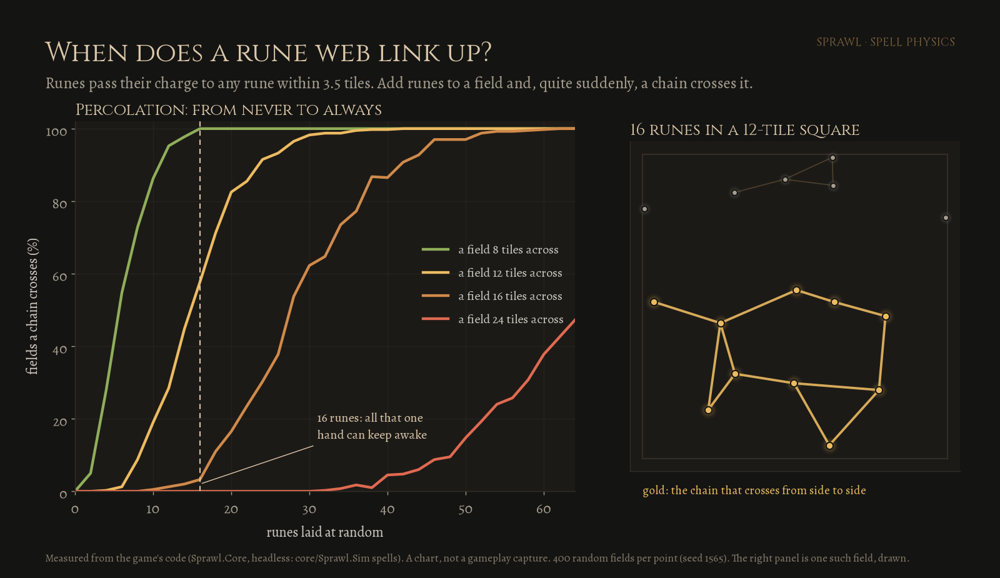
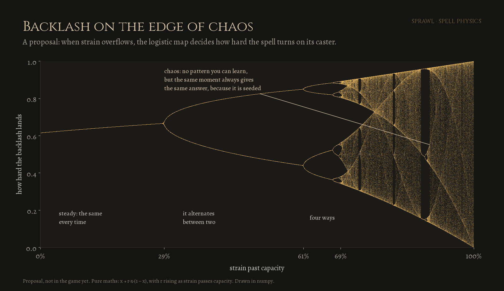

6 November 2026
The physics of a spell
6 November 2026
Sprawl's magic now runs on real maths: what a spell costs, how far it flies and what happens when two meet all come from one small piece of physics.
Magic in Sprawl has always been built from four choices: what the current is made of (fire, ice, stone and nine more), where it is pointed, what shape it takes and how it behaves in time. Put them together and you have a spell. That part works. The numbers underneath it were another matter.
Every one of them was picked by hand. A fire bolt flew 8.25 tiles, and so did a lightning bolt, a stone bolt and every other bolt in the game. It hit as hard at the end of its flight as it did at your fingertips. Every pair of essences that "amplify" each other amplified by exactly the same amount. The numbers did their job, but nothing explained them, and every new idea meant inventing more of them. The magic felt a little lacking: right in shape, hollow underneath.
A spark from an astrophysicist
Then we came across The Gorilla Of Destiny, an astrophysicist who makes videos working out the physics of D&D's magic, on paper, with a great deal of joy. His idea is to treat a spell as a wave: a little packet of energy spread out over space and over how much damage it does. Work out the energy that packet needs and something lovely falls out. A spell that does exactly the same damage every time costs infinite energy. A spell that is wildly random costs a lot too. The cheapest spell sits in between, with a little randomness, and he thinks that is where cantrips live.
In another video he used statistics on D&D's spell tables to ask how damage grows with spell level. Casting a low spell at a higher level grows in a straight line; spells that are higher level to begin with grow much faster. As he put it, a level 9 Fireball is not a Meteor Swarm.
Sprawl is not D&D. It has no spell levels and no dice, just those four choices. So rather than borrow his tables, we took the central idea and built our own model for Sprawl, with a few other pieces of real maths alongside. The charts below are measured from the game's own code, not screenshots.
Precision has a price
Every spell now has a natural spread: how much one strike differs from the next. Hold it tighter and it costs more aether. Hold it looser and it costs more too. The rule is simple: twice as exact costs a quarter more, and so does twice as wild.

The piece that is ours is the caster's grain: how finely they can hold the current. A master's grain is finer, so their cheapest spell lands more evenly and costs less. Here is the nice surprise. Sprawl already gave higher tiers a small discount on aether, and that discount turned out to be exactly the grain. So the physics explains a number we had picked by hand, and no spell's cost changed at all.
Size matters too. A bolt is small and lands within about a tenth of its mean every time. A nova is big and wild, more so in wind and lightning than in steady stone or iron.

Range comes from fading
A loosed bolt now bleeds energy at its own essence's rate, and it comes apart when it has lost half. Stone and ice hold together longest, lightning and wind scatter soonest, and fire keeps the flight every bolt had before, so the spell you start with flies as far as it always did.

That also means a bolt hits hardest close up and half as hard at the end of its flight. Weak bolts don't notice, because every strike does at least a small fixed amount, but a master's bolt rewards stepping in.
Power buys range, but slowly. Every time you double a spell's strength it holds together one half-life longer. When fire meets wind the bolt roars and flies almost twice as far. When fire meets water you get steam, and the bolt barely leaves your hand.

When two essences meet
This is the part we like best. Every essence now has a place on a wheel. When two related essences meet, they add like waves: close together on the wheel they reinforce each other, far apart they cancel. Light and shadow sit exactly opposite, so they annihilate into silence. Unrelated essences never interfere at all, like two lamps shining on the same wall.


The old table gave every pair of a kind the same strength. We fitted the wheel to it, so nothing moved far, but now every pair has its own character: ice and water reinforce almost perfectly, while light and life only partly do. And adding a new essence one day means giving it one place on the wheel, not a whole new row of numbers.

A surprise in the runes
A witch's buried runes pass their charge to any rune within a few steps, and one witch can keep sixteen awake at once. We asked the maths how big a field those sixteen can web together, and got the signature of something called percolation: as you add runes, a chain across the field goes from never to always, quite suddenly. One witch can web a small yard every time and a market square about half the time, but almost never anything bigger. That feels exactly right. Webbing a town takes a coven.

What went wrong
Two things, both caught by the tests and by looking hard at the pictures. The first version made a bolt's damage depend on how long a frame took, so a stuttering frame could change a hit. It now measures how far the bolt travelled instead, which is what range is really about anyway. And our first picture of two waves meeting made light and shadow look bright when the maths says they cancel. A chart that contradicts its own numbers is worse than no chart, so we redrew it.
What comes next
- Dice. The spread is worked out for every spell, but strikes don't roll it yet. That is what will make precision something you feel.
- A precision control in the grimoire, from wild to exact, with the cost shown.
- Overcharging. Pouring more into a spell will grow it in a straight line, while the strain on your body grows with the square: the caster is the wire the current heats. A higher tier stays a real step up, never just a louder version of what you had.
- Backlash on the edge of chaos. When strain overflows, a famous little equation from chaos theory could decide how hard the spell turns on you: steady at first, then flickering, then unpredictable, but always the same for the same moment.

Thanks to The Gorilla Of Destiny for the spark. The model, the wheel and every number in it are Sprawl's own; the joy of doing physics on a page of a notebook is his.